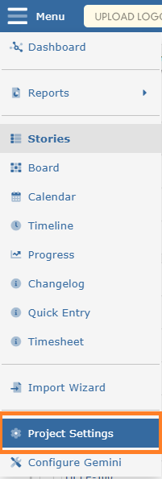

Sprints (or Versions) represent time-boxed work to be done. Once the sprint is complete, working code is expected to be delivered.
The objective is to define Sprints that contain the work to be completed. Work that needs to be completed but is not yet assigned to a Sprint is known as the Backlog.
Items in the Backlog are assigned to Sprints, and scheduled in the process. Resources are assigned and delivery dates are determined.
Any project can use Gemini's Sprint time-boxing, not just Agile projects.

Like Components, Sprints can be organized into a hierarchical structure (nested):
Every sprint should be allocated a start and completion date. This is very important if you wish to use Gemini's Progress page with its Burndown and Burnup charts.
NoteSprints can only be maintained by users who have "Can Manage Versions" permission.